I work full time and go to school, which keeps me pretty busy. However, most of my free time is spent with dogs. I have 4 of my own and I volunteer with a local dog rescue, Route 66 Rescue. I foster dogs for the rescue and we have a meet and greet event nearly every Saturday. The rescue has just recently taken over CARE's shelter in Ozark, they moved to Aurora. There was some work that needed to be done, but we are getting close to an opening date.
I like to read, mostly fantasy novels. The Sword of Truth series is one of my favorites. Right now I am on the Outlander series.
I'm a big fan of The Walking Dead and Game of Thrones.
My Puppies
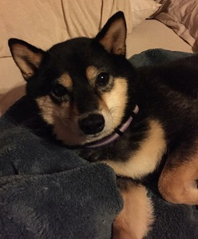
This is Mya. She's a Shiba Inu, and she's almost 9.
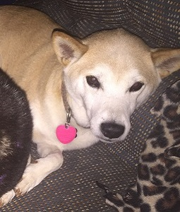
This is Annie. She's also a Shiba Inu, and she's about 4.
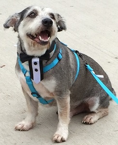
This is Teddy. He's a mutt... There is some Schnauzer in there for sure. He is about 4, also.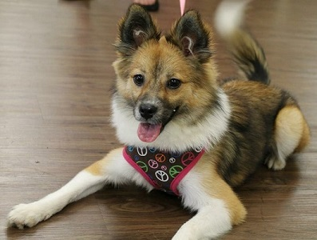This is Princess. She's a Sheltie/Pomeranian, and she's almost 2.
Some of My Foster Puppies (past and present)
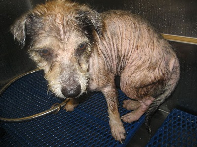
This is my Teddy, when he first came into rescue. He was a foster failure (a foster that you end up adopting because you just can't let them go). He's a perfect testament to the benefits of animal rescue. As you can see, he was almost completely bald due to flea allergies. He was also heartworm positive.
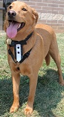
This is Harley, a Golden Retriever mix. He is fearful of strangers and will probably be my permanent foster.This is Chief, a Pug/Fiest mix.
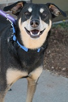
This is Cramer, we think he is a Heeler mix.
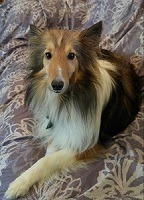
This is Ace, a Sheltie, in his forever home.
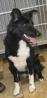
This is Abby, the deaf Border Collie. She was adopted.
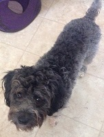
This is Farley, a Poodle mix boy. He was adopted.
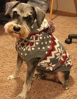
This is Parker, a Schnauzer. He was adopted.
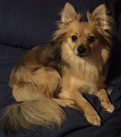
This is Sophia, a Pomeranian/Papillion mix. She was adopted.
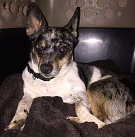
This is Gilligan, a Chihuahua/Heeler mix. He was adopted.